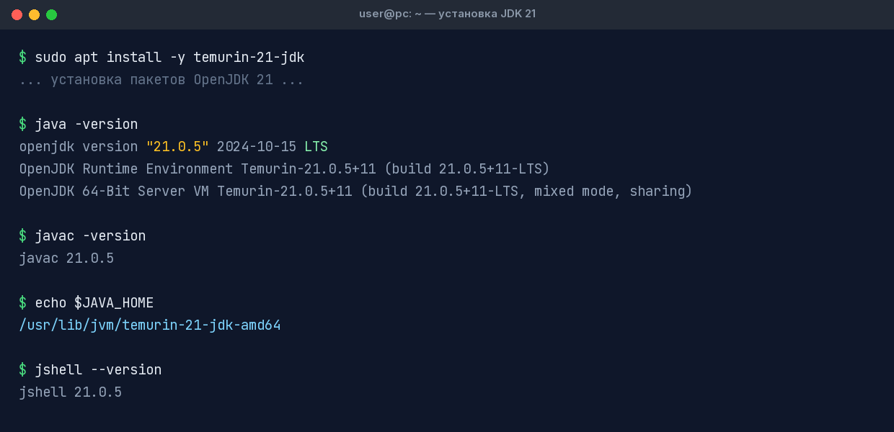

Установка JDK 21
Выбор дистрибутива и установка на Windows, macOS и Linux
Для разработки на Java нужен JDK (Java Development Kit). Существует много сборок одного и того же OpenJDK — они проходят общий TCK-тест на совместимость и отличаются лицензией и сроками поддержки.
Какой дистрибутив выбрать
| Дистрибутив | Вендор | Лицензия / поддержка | Рекомендация |
|---|---|---|---|
| Eclipse Temurin | Eclipse Adoptium | GPLv2+CE, бесплатно, LTS поддерживается долго | ⭐ Лучший выбор для учёбы и прода |
| Amazon Corretto | Amazon | GPLv2+CE, бесплатные долгосрочные обновления | Отлично, особенно в AWS |
| Azul Zulu (Community) | Azul | GPLv2+CE, бесплатно | Хорошая альтернатива |
| Oracle JDK 21 | Oracle | NFTC: бесплатно для большинства, с оговорками по срокам для старых LTS | Если требует работодатель |
| Microsoft Build of OpenJDK | Microsoft | GPLv2+CE, бесплатно | Удобно в Azure/Windows |
| BellSoft Liberica | BellSoft | GPLv2+CE, бесплатно | Популярен в РФ, есть JDK FX-сборки |
Windows
Вариант 1 — через пакетный менеджер winget (рекомендуется, PowerShell):
winget install EclipseAdoptium.Temurin.21.JDKВариант 2 — установщик MSI: скачайте .msi с adoptium.net, при установке отметьте галочки *Set JAVA_HOME variable* и *Add to PATH*.
macOS
# через Homebrew
brew install --cask temurin@21
# проверка
java -versionLinux
Вариант 1 — SDKMAN! (удобно переключать версии):
curl -s "https://get.sdkman.io" | bash
source "$HOME/.sdkman/bin/sdkman-init.sh"
sdk list java | grep 21 # посмотреть доступные сборки 21
sdk install java 21.0.5-tem # установить Temurin 21Вариант 2 — APT (Ubuntu/Debian), репозиторий Adoptium:
sudo apt install -y wget apt-transport-https gpg
wget -qO - https://packages.adoptium.net/artifactory/api/gpg/key/public | gpg --dearmor \
| sudo tee /etc/apt/keyrings/adoptium.gpg > /dev/null
echo "deb [signed-by=/etc/apt/keyrings/adoptium.gpg] \
https://packages.adoptium.net/artifactory/deb $(awk -F= '/^VERSION_CODENAME/{print$2}' /etc/os-release) main" \
| sudo tee /etc/apt/sources.list.d/adoptium.list
sudo apt update && sudo apt install -y temurin-21-jdkПроверка установки
$ java -version
openjdk version "21.0.5" 2024-10-15 LTS
OpenJDK Runtime Environment Temurin-21.0.5+11 (build 21.0.5+11-LTS)
OpenJDK 64-Bit Server VM Temurin-21.0.5+11 (build 21.0.5+11-LTS, mixed mode, sharing)
$ javac -version
javac 21.0.5
java -version и javac -versionjava не найдена после установки — перезапустите терминал (или добавьте JDK в PATH вручную, см. следующую страницу).Что установлено
JDK занимает ~300 МБ и содержит: компилятор javac, запускальщик java, REPL jshell, архиватор jar, генератор документации javadoc, инструменты профилирования (jcmd, jstack, jmap) и полную библиотеку классов (java.base, java.sql, java.net.http и др.).